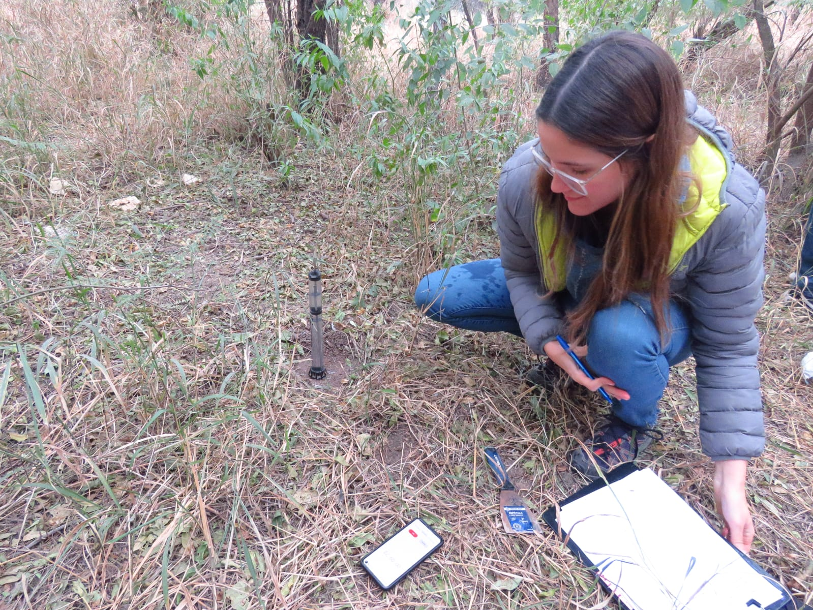

Bienvenidos a mi Sitio Profesional
Soy Agustina Valdemarca, Ingeniera Forestal y Doctoranda en Ciencias y Tecnologías Forestales. Mi pasión por la conservación y restauración de los ecosistemas naturales me ha llevado a colaborar en proyectos de impacto que promueven el desarrollo sostenible y la preservación de la biodiversidad.
A través de este espacio, comparto mi experiencia en investigación, consultoría ambiental y educación, así como mis publicaciones y proyectos que reflejan mi compromiso con el medio ambiente. Estoy convencida de que el conocimiento científico y la acción conjunta son clave para afrontar los desafíos ambientales de nuestro tiempo.
